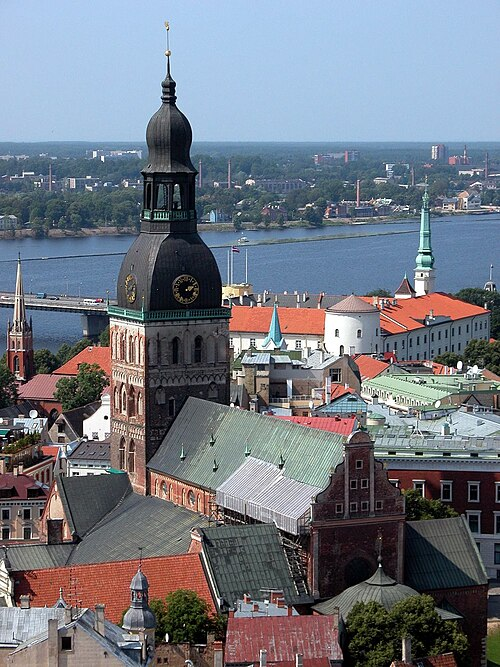
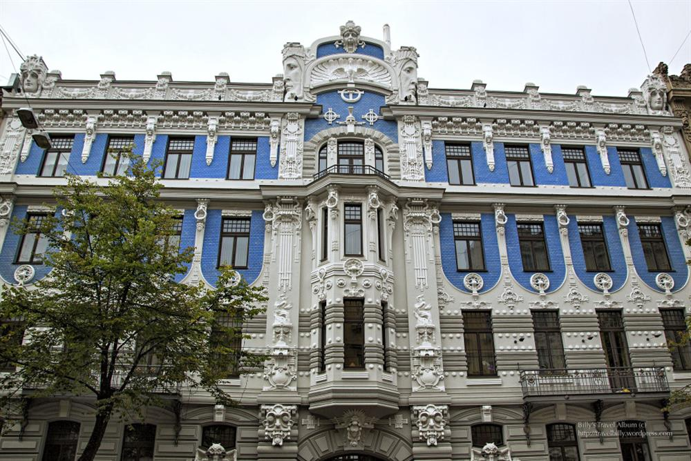
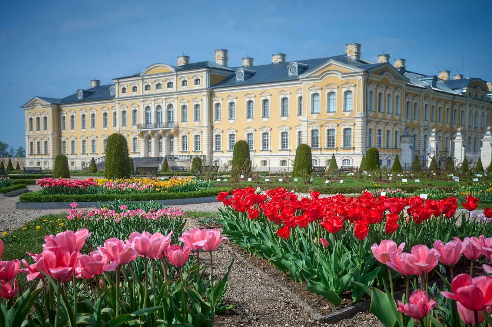
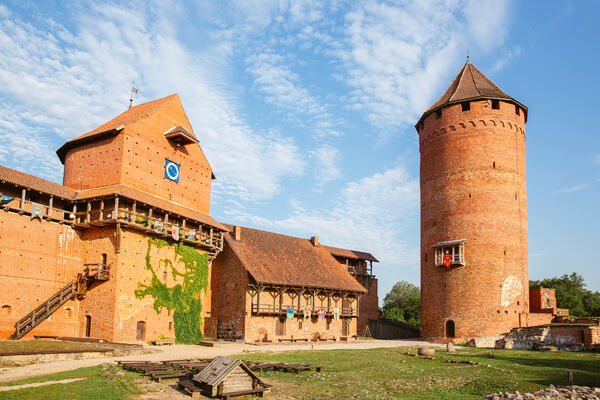

Rīgas panorāma
Skats uz Vecrīgas jumtiem, baznīcu torņiem un Daugavu.
Virtuālā izstāde · P25-1
No viduslaiku pilīm līdz Rīgas jūgendstila namiem un mūsdienu ēkām.
Apskatīt izstādi ↓
Par izstādi
Izstādes mērķis ir iepazīstināt ar Latvijas arhitektūras daudzveidību. Apskatāmas pilis, vēsturiskas pilsētas, jūgendstila nami un mūsdienu arhitektūra. Vietējie attēli ir īstas fotogrāfijas.
Attēlu kolekcija
Izvēlēti objekti no dažādiem Latvijas novadiem un laikmetiem.

Skats uz Vecrīgas jumtiem, baznīcu torņiem un Daugavu.

Rīgas fasādē redzami grezni rotājumi un zilas dekoratīvās detaļas.

18. gadsimta pils ansamblis ar dārzu Zemgalē.

Viduslaiku pils Siguldā, kuras būvniecība sākās 1214. gadā.

Rātslaukuma nams, kas pirmoreiz celts 14. gadsimtā un vēlāk vairākkārt pārbūvēts.

Vēsturiska baznīca Vecrīgā ar atpazīstamu torni un plašu jumtu.

Pils komplekss stāsta par Cēsu un Latvijas vēsturi.

Vēsturiskajā centrā redzama koka apbūve un 19. gadsimta ķieģeļu tilts.

Latvijas Nacionālās bibliotēkas ēku projektējis arhitekts Gunārs Birkerts.
Interaktīvs elements
Attēli pārslēdzas automātiski. To var apturēt vai pārslēgt ar pogām.
Papildu informācija
Noklikšķini uz nosaukuma, lai atvērtu fotogrāfiju vai tās avota lapu.